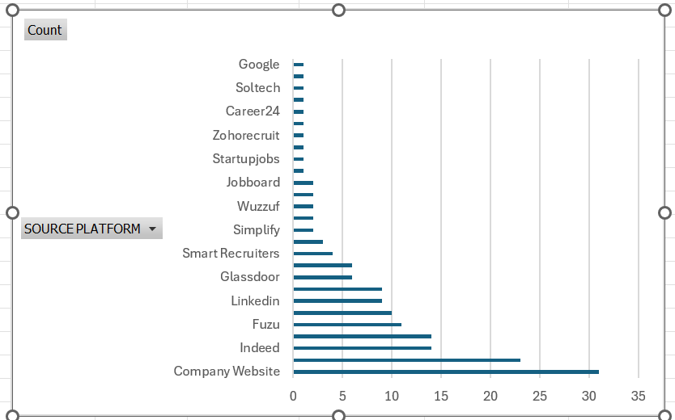

Data Analyst · Business Intelligence · Analytics Educator
Turning data into decisions and knowledge into opportunity.
I analyse business and operational data, build decision-ready dashboards, and simplify analytics for people and teams. My work sits at the intersection of fintech operations, data analytics, business intelligence and practical learning.

About me
Analytical by nature. Practical by design.
I am a detail-oriented data professional with a background in Economics & Statistics and over four years of experience in fintech and payment processing. My professional experience in reconciliation, settlement and disputes has taught me how to use data to investigate exceptions, protect financial accuracy and improve operational processes.
Alongside my fintech career, I have developed practical experience in research, dashboarding and analytics education. At Afriment, I led analytics interns on market intelligence and learner/industry research projects, translating raw information into insights that could support training and partnership decisions.
My goal is simple: make data easier to understand, easier to act on, and more useful to the people making decisions.
Skills & toolkit
What I work with
Tools are only useful when they answer the right business question. I focus on the full journey from messy data to clear action.
Experience
Where I have created value
Selected work
Projects with a business question behind them.
Each project is structured around the question, method, tools and decision the analysis supports.
Learning & development
Always learning. Always teaching.
Continuous development across Excel, SQL, Power BI, Python, data cleaning, visualisation and business storytelling.
Helping beginners understand data concepts through practical examples, guided projects and simplified explanations.
Experience researching African technology companies, job markets, tools, skills and partnership opportunities.
Services
How I can help
Contact
Have a data question, project or learning goal?
I am open to analytics projects, BI opportunities, research collaborations, analytics education and professional conversations.